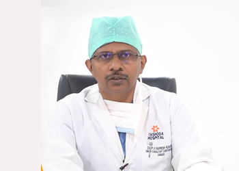

<mat-card>
    <div fxLayout="row" fxLayout.xs="column" fxLayoutWrap fxLayoutGap="1%" fxLayoutAlign="center center">
        <div class="w100p" fxFlex="50%">
            
            </div>
            <div class="w100p" fxFlex="50%">
                <h5 style="margin-top: 5%;">Welcome !!!</h5>
              <p style="margin-top: 15%;">Dr. PV Naresh Kumar is an acclaimed Cardiothorpic Surgeon at the world reowned Yashoda Hospitals in Hyderabad. He has an experience of more than 20 years in CTVS and Extensive Surgical Expertise in Off-Pump CABG Total Aerial Revascularization, Minimal Invasive Valve Surgery, MIDCAB, Aortic Aneurysm and the Minimal
        Invasive Valve Repairs and Replacements. He is known for Heart Failure Surgeries like LV Restorations, Post Mi VSR  Repairs, etc. Dr.Naresh has performed many Heart Transplants, Lung Transplants and combined HeartLung Transplantations, LVAD Implantations and also Congential  Cardiac Repairs              </p>
            </div>
            </div>
</mat-card>